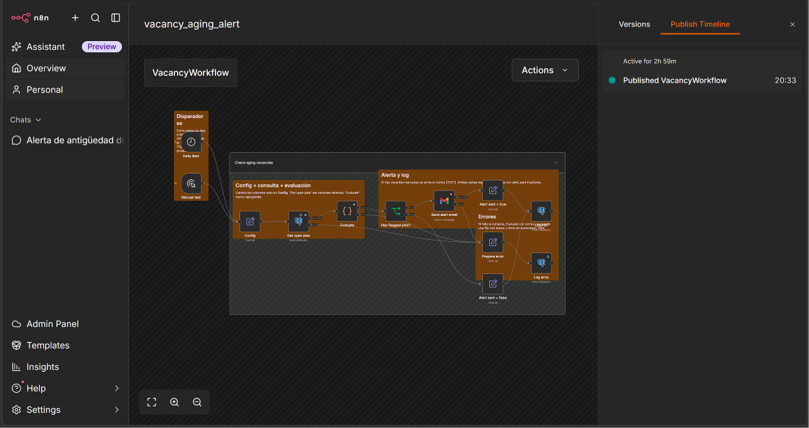
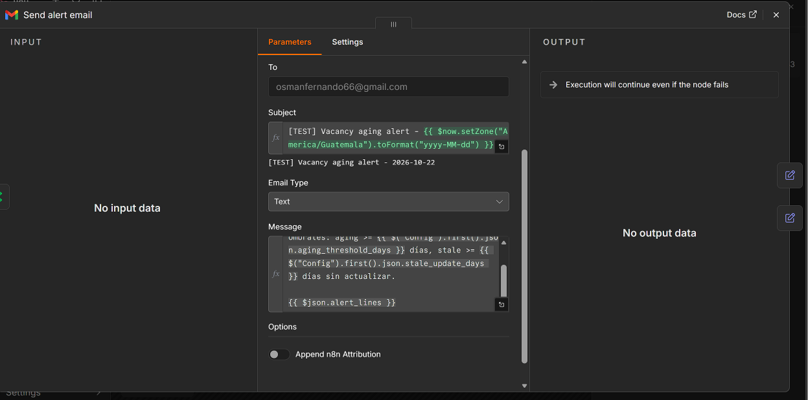
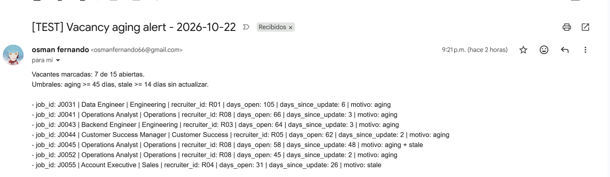

Recruiting & Vacancy Performance
A recruiting reporting model on synthetic data that changes every day, with validated KPIs for open roles, candidate conversion, time-to-fill and aging vacancies.
- Status
- Running on synthetic data
- Data
- Synthetic, simulated daily
- Tools
- PostgreSQL (Supabase), SQL, Python
- Automation
- n8n daily check and log
Business problem
Hiring teams need to see which vacancies are aging, where candidates drop out of the process, and how long roles take to fill, so recruiters can act on stalled roles before hiring managers escalate.
Objective: a reporting model with one documented definition per KPI and an automated alert for vacancies above an aging threshold.
Data model
PostgreSQL on Supabase, schema recruiting. Synthetic records only: candidates carry an ID, a region and a creation date, nothing personal. Stage dates, statuses and sources are enforced with CHECK constraints and foreign keys.
| Table | Grain | Key fields |
|---|---|---|
recruiters | One row per recruiter | recruiter_id, team |
requisition_queue | One approved requisition waiting to open | scheduled_open_date, status (queued, published, cancelled), job_id |
jobs | One row per vacancy | created_at, last_updated_at, closed_at, status, department, recruiter_id |
candidates | One row per synthetic candidate | candidate_id, region, created_at |
applications | One candidate applying to one job | source, current_stage, applied_at, screened_at, interviewed_at, offer_at, hired_at, rejected_at |
application_events | One stage transition | application_id, from_stage, to_stage, event_at |
simulation_runs | One simulated day | sim_date (unique), counts of changes, status |
automation_runs | One n8n alert run | run_at, jobs_checked, jobs_flagged, flagged_job_ids, alert_sent, status |
See the data model and how the data is generated.
KPIs
- Open vacancies as of the reporting date
- Time-to-fill, from vacancy creation to the first accepted offer
- Application-to-interview and interview-to-hire conversion
- Vacancy aging buckets and stale-update alerts
- Candidate source effectiveness, with sample-size caveats
Every query and its definition is in 06_kpis.sql.
Funnel definitions
Each conversion has one numerator and one denominator
Definitions used for the results below| Metric | Numerator | Denominator |
|---|---|---|
| Application to interview | Distinct applications with an interview date | Distinct applications in the cohort |
| Interview to hire | Distinct applications with a hire date | Distinct applications with an interview date |
| Vacancy aging | Reporting date minus creation date, for vacancies open on that date | |
| Time to fill | Vacancy creation to the first accepted offer (hired_at); filled vacancies only | |
Cohort: applications submitted 30 to 180 days before the reporting date. The last 30 days are left out because those candidates have not had time to reach interview or hire.
Results
Synthetic data. These figures come from generated records, updated every day by a simulator, not from a real company. They show that the model, the definitions and the checks work. They are not hiring benchmarks. This is a snapshot; the live database moves on every day.
As of 22 Oct 2026, 21:08 Guatemala time, with activity simulated through 21 Oct. All 26 validation checks in 05_validation.sql returned 0 failing rows.
- Open vacancies
- 15plus 1 on hold
- Time to fill, median
- 41.1 daysaverage 44.3; n = 40 filled
- Application to interview
- 16.7%212 of 1,269
- Interview to hire
- 17.9%38 of 212
- Open 46+ days
- 5of 15 open
- No update in 14+ days
- 2J0045 (47 days), J0055 (25)
- Applications
- 1,543830 candidates
- Vacancies created
- 635 departments
Vacancy aging
Open vacancies by days since creation| Days open | 0–15 | 16–30 | 31–45 | 46–60 | 60+ |
|---|---|---|---|---|---|
| Open vacancies | 6 | 2 | 2 | 1 | 4 |
Source effectiveness
Conversion cohort, n beside each rate| Source | Applications | To interview | Interview to hire | Application to hire |
|---|---|---|---|---|
| Referral | 164 | 25.6% | 26.2% (n = 42) | 6.7% |
| Agency | 112 | 21.4% | 20.8% (n = 24) n < 30 | 4.5% |
| 454 | 19.2% | 17.2% (n = 87) | 3.3% | |
| Career site | 211 | 14.7% | 19.4% (n = 31) | 2.8% |
| Job board | 328 | 8.5% | 3.6% (n = 28) n < 30 | 0.3% |
The ranking follows the simulation parameters (referrals are generated to convert best and job boards worst), so it confirms the queries rather than revealing anything about real sourcing. Rates with fewer than 30 cases in the denominator are flagged.
Automation
A Python simulator advances the data once a day: queued requisitions open, applications arrive (more for new vacancies), candidates move through the funnel, offers fill vacancies, and a share of vacancies is left untouched for weeks so the alert has real cases. It is idempotent, catches up missed days and logs each day in simulation_runs. An hour later an n8n workflow checks the open vacancies.
- Daily triggerRuns at 08:00 Guatemala time and reads the open vacancies.
- Threshold checkFlags vacancies open 45+ days or with no update in 14+ days.
- Run logEvery run writes checked and flagged counts to
automation_runs. - Email alertSends an HTML table of the flagged vacancies.
The dashed step is built and will be marked implemented once an alert with flagged vacancies has been received.
See the architecture and the runbook.
Evidence

dashboards/recruiting-n8n-workflow.pngvacancy_aging_alert workflow in n8n.
dashboards/recruiting-alert-email.png
dashboards/recruiting-automation-runs.pngautomation_runs log, one row per run.Limitations: the data is synthetic, and n8n runs on a local machine, so the alert only runs while that PC is on.